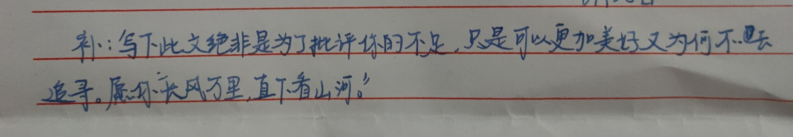

2023年的毕业季，我的舍友老王看到即将毕业的学生万分感慨，玩笑似的试问我能不能为此作诗一首，当时我就记下并开始酝酿了，当时只是略写了几句，后来考虑有些东西需要经过时间的沉淀，才终于有了以下的版本：
在之前，我已写过以及想过好几个版本了，可以说是在不同时期的“以物喜、以己悲”了。至此，终是伴随着“吾谁与归”的心态写下了这个最终版本。写的有点像离别信，略显悲伤色彩。
四年前，差不多相隔一个月的时候，我的朋友也给我留下了一封信，信中所述仿佛把我拉回了从前，既让我怀念，又让我对未来憧憬。
犹记得来自五湖四海的同学们你一句一行我一句一行，拼接了我大学四年记忆的蓝图。记得聚会上同学们的热情和爽朗，记得租房备考时我可以做得一手好菜给兄弟们吃，记得兄弟们在外喝烂醉的时候互相搀扶的背影，记得专业设计时同学们偶尔认真的样子等等等。作为一名碌碌无为的大学生，又有了同学们这四年来带给我的点点滴滴，我虽不务学生会，也不外出放浪，但总体过得还算是安适自由。
五月的晚风尽抚我身，临近最后的期限我经常去散步。徐徐回望，大学期间，每隔一段时间，我是不是能看淡一些东西？能挽回的是不是少之又少？是不是很多时候就像我有心思想到写这样一篇信一样，我没有因此绞尽脑汁而辗转反侧，却可以倒头就睡，之后很长时间没写也不会心有余悸？臆想现实、以为误入梦中？一再想了想，亦没有其疾如风，故吾亦不自在。
至此，修不修饰的已不再变得如此重要。这本来是有一大段话被写下，但是我删了改，改了删，删删改改，然后，就这样吧。
来日纵使千千阙歌，飘于远方我路上。最后一句我用朋友的信的最后一句作为收尾，前半句仍可以为自己的平凡的大学生活画上句号，后半句也是给彼此的希冀。
